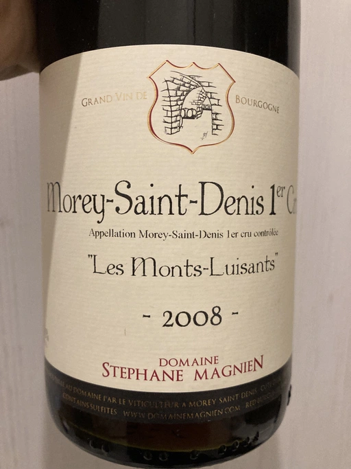

- Type
- Red Still, Dry
- Producer
- Domaine Stephane Magnien
- Vintage
- 2008
- Location
- France, Morey-Saint-Denis AOC
- Grapes
- Pinot Noir
- Alcohol
- 13
- Sugar
- 1
- Price
- 2080 UAH
- Cellar
- N/A
Made of old vines, including Pinot Tordu, aromatic clone of Pinot Noir. Aged in oak (only 35% are new) for 12 months. Unfined and (usually) unfiltered. Average production is 450 bottles per year.
Producer
Small (4.5 ha) domaine located in the heart of Côte de Nuits, between Gevrey-Chambertin and Chambolle-Musigny.
Ratings
2022-10-31 - 8.75
What a beautiful and sophisticated old-school style. Fried sunflower seeds, wet wood, mushrooms, subtle notes of pickles, freshly cut green walnut (e.g. iodine). There are red fruits, but on the back and in small quantities. Well preserved and lively. Almost perfectly balanced, high acidity, medium and mature tannin, elegant and elevated. And most importantly, it’s just delicious.